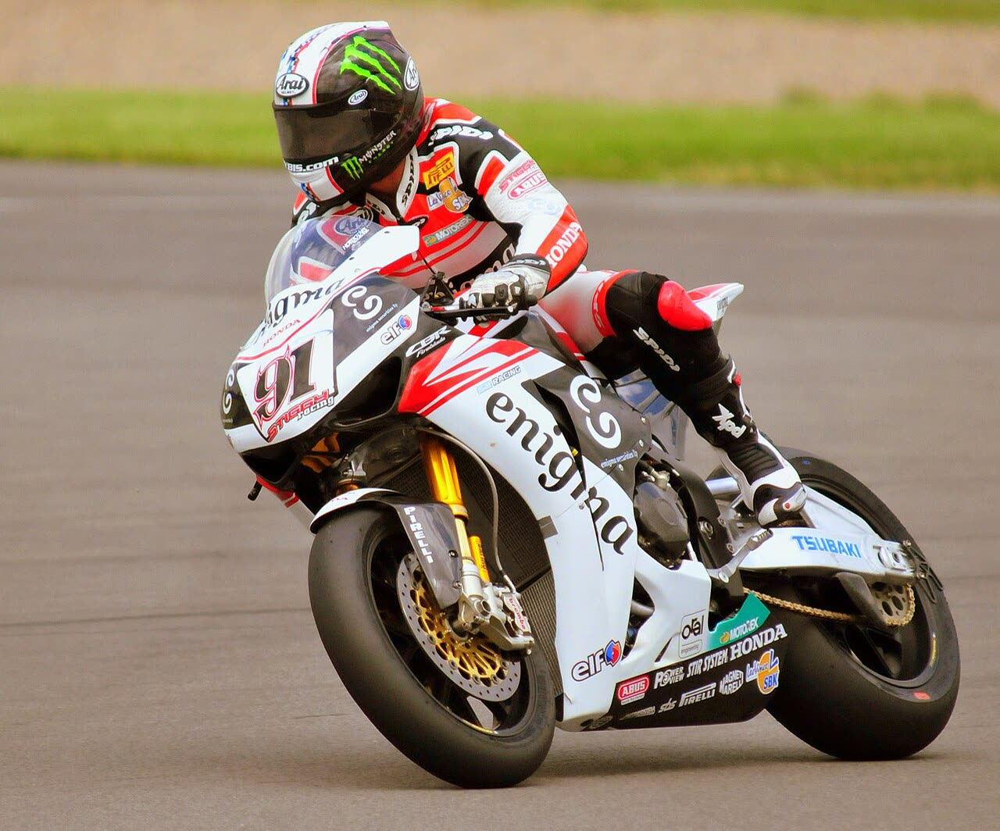

Bulega vence a corrida 1 em Estoril e amplia a vantagem no título

Nicolò Bulega venceu a corrida 1 da etapa portuguesa do Mundial de Superbike, em Estoril, superando Iker Lecuona na volta 3 e cruzando a linha quase quatro segundos na frente. Foi a 27ª vitória do italiano na temporada, igualando o recorde de Álvaro Bautista em corridas de distância completa.
Alberto Surra completou o pódio, o primeiro da carreira numa corrida longa. Bulega já tinha garantido o título mundial em Cremona e agora lidera o campeonato por 138 pontos sobre Lecuona.